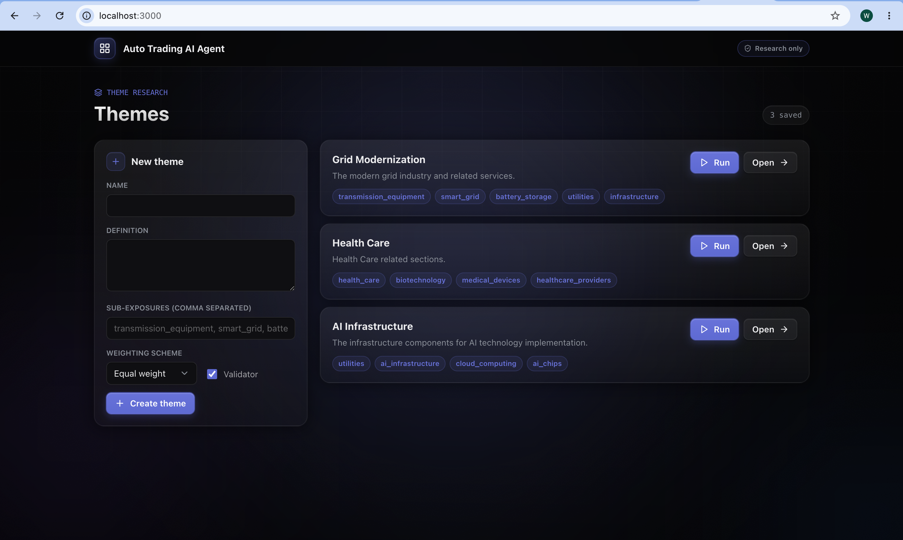
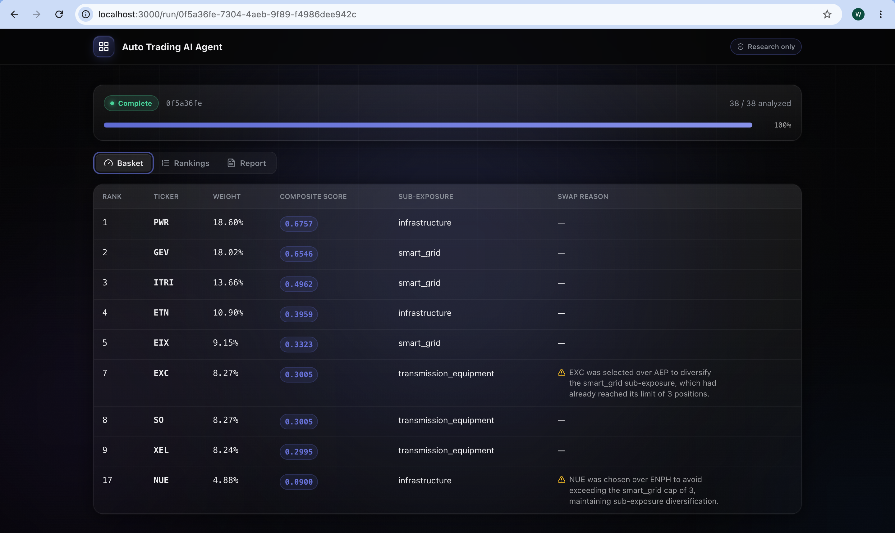
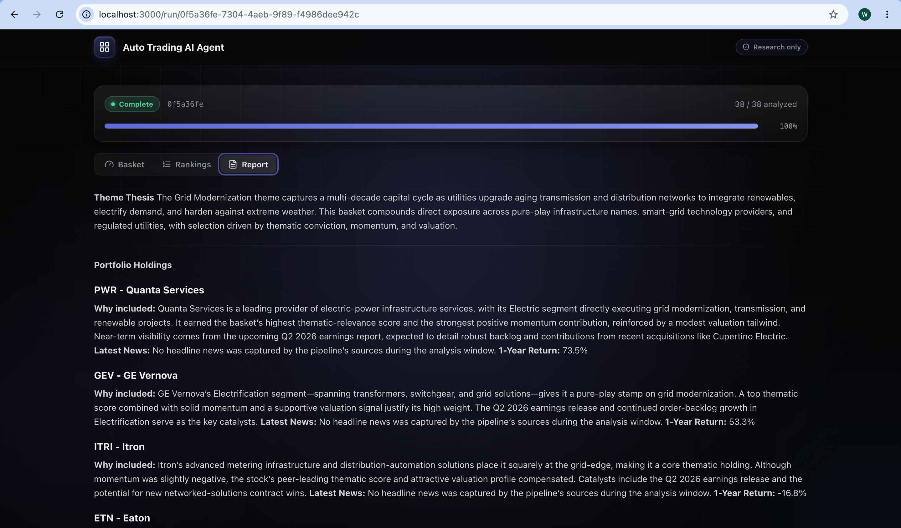

01 / Overview
Theme-to-execution in minutes.
In the high-stakes world of wealth management, financial advisors at large broker-dealers face a familiar bottleneck. A client mentions interest in "AI infrastructure," "grid modernization," or "defense tech." The advisor spends hours screening Morningstar, Bloomberg, and YCharts, manually building a shortlist, navigating firm compliance lists in a separate system, then entering trades account-by-account in the order management system, often missing the market window entirely.
The Automated Trading AI Agent is designed to collapse that cycle from hours into minutes while keeping the advisor firmly in control. This article outlines the market opportunity, product strategy, and technical foundation behind the platform.
02 / Market Research
The perfect storm for agentic thematic tools.
Large broker-dealers, including Morgan Stanley Wealth Management, Merrill Lynch/Bank of America, UBS, Wells Fargo Advisors, and scaled platforms like LPL, Ameriprise, Raymond James, and Edward Jones, remain the core channel for mass-affluent through ultra-high-net-worth clients. They sit inside a global wealth ecosystem of roughly $60-130+ trillion in assets under management, with U.S. advised assets continuing to expand amid demographic shifts, market growth, and technology disruption.
McKinsey's outlook on U.S. wealth management in 2035 highlights four critical shifts that favor specialized agentic solutions:
- 01Move from simple automation to orchestration of semi-autonomous agents that collaborate with advisors and back-office teams.
- 02Reinvest productivity gains into innovation rather than pure cost-cutting.
- 03Build AI-fluent, human-centered organizations.
- 04Enable a new archetype of digital-first, AI-native advice delivery that expands access while the best human advisors migrate further upmarket.
Competitive landscape analysis shows existing platforms excel in different slices of the problem. Magnifi (TIFIN) leads in natural-language thematic discovery and research. Vise focuses on hyper-personalized portfolio construction and tax-aware automation. Envestnet provides enterprise-scale insights, next-best-action engines, and workflow integration across planning and reporting.
None fully close the loop from client theme request, to compliant ranked basket, to multi-account allocation, to advisor-approved execution inside the constraints of a large broker-dealer. That gap is the opening.
03 / Product Strategy
Mission, value, and differentiation.
Product Vision
A theme-to-execution AI Agent platform purpose-built for financial advisors at large wirehouses and broker-dealers.
For advisors who must respond to client-driven theme requests with specific, timely, compliant trades, the Automated Trading Agent translates a theme into ready-to-execute trade baskets across client portfolios in minutes.
Product mission: accelerate value-generation speed with compliant decision-making through four tightly linked capabilities:
- 01Theme Classifier - NLP engine that maps a keyword or phrase to a ranked basket of 8-12 securities, each with confidence scores and human-readable rationales.
- 02Real-time Compliance Overlay - Inline green/yellow/red flags evaluated against firm-specific rules, with drill-downs and auto-replacement suggestions, no separate portal.
- 03Intelligent Allocation Rules - Per-account distribution (equal weight, risk-adjusted, tax-aware) that respects individual constraints and produces a structured trade list.
- 04Advisor-in-the-Loop Execution - Unified review dashboard with full edit capability, version tracking, client-ready exports, and an explicit approval gate before any OMS hand-off.
Differentiation is deliberate: versus Magnifi/TIFIN, stronger compliance visibility and multi-account bulk execution; versus Vise, more specialized for rapid thematic idea generation and explicit compliance flagging with a lighter, advisor-controlled workflow; versus Envestnet/Aladdin, a fast thematic front-end that feeds existing enterprise systems rather than replacing them.
04 / Technical Foundation
Five agents, one transparent pipeline.
The system is deliberately scoped as research-and-proposal, not live order placement. Given a theme such as "grid modernization," it screens a candidate universe, analyzes each name, scores and ranks with a transparent quantitative model, constructs a constrained 5-10 name basket, and produces a written rationale. Runs are on-demand only.



Technical Stack
Multi-Agent Orchestration
- 01Screener Agent - Decomposes the theme into 3-6 sub-exposures, pulls verifiable tickers from thematic ETFs, GICS, and index membership (50-150 candidates), and flags liquidity or market-cap issues.
- 02Analyst Agent - Produces grounded, source-cited qualitative reports and structured scores for each ticker in parallel.
- 03Modeling Agent - Applies deterministic factor scoring (thematic fit, valuation, growth, quality, momentum, sentiment), z-score normalization, weighted-sum or Borda rank aggregation, and final ranking.
- 04Trader Agent - Constructs the 8-10 name basket with weights and hard constraints such as sector caps and liquidity floors.
- 05Report Agent - Generates the investment rationale document from theme definition, analyst reports, and factor breakdowns.
Prompt engineering emphasizes narrow role framing, explicit numbered procedures, grounding and anti-hallucination constraints, and negative instructions that prevent agents from drifting into each other's responsibilities.
Evaluation Framework
- 01Deterministic components - Unit tests, property tests for monotonicity and valid ranks, and constraint verification for Modeling and Trader agents.
- 02LLM-driven components - Golden-set coverage against known ETF holdings, basket-plausibility overlap checks, and groundedness verification against Langfuse traces and source tool calls.
- 03System-level - Shadow-mode weight testing without re-fetch or LLM calls, forward-looking performance tracking versus the theme's reference ETF, and a mandatory human review gate before any client-facing output.
05 / Looking Ahead
From time sink to competitive advantage.
The product roadmap prioritizes Theme Classifier and Compliance Overlay for 3-6 months, followed by Smart Allocation and Advisor-in-the-Loop capabilities. The explicit project timeline runs from Q4 2026 through Q3 2027, with clear feature epics and configurability for firm-specific rules, allocation policies, and audit requirements.
By combining specialized multi-agent orchestration, transparent quantitative ranking, real-time compliance, and strict advisor control, the Automated Trading AI Agent turns thematic requests from a time sink into a competitive advantage. Advisors regain hours, clients receive timely and explainable exposure, and firms gain a supervised, auditable path into the agentic future of wealth management.